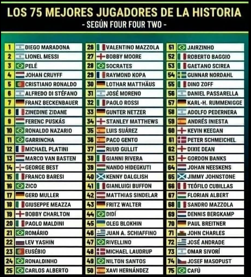
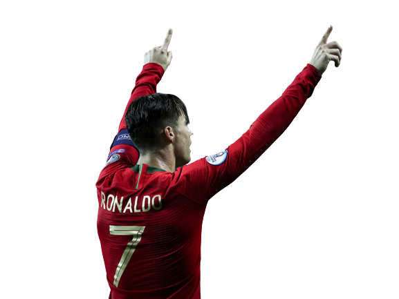

A lo largo de la historia han existido multitud de jugadores que han marcado una época y que son
considerados como autenticas Leyendas del Futbol. De Pelé a Maradona, de Cruyff a Beckenbauer o de Messi a Cristiano Ronaldo, el debate sobre quién es el mejor siempre ha
estado presente.
Recientemente la prestigiosa revista Four Four Two actualizó su lista de los 75 mejores
jugadores de todos los tiempos (la compartiremos en la imagen) pero en Memorias del Fútbol
hemos elaborado nuestro propio Ránking ¡Atentos!

TOP 4 Mejores Futbolistas de la Historia
1. IKER CASILLAS (España)
¡El "Santo" defendió la porteria del Real Madrid durante 16 años y se
consolidó como uno de los mejores porteros de su época. Su grandeza
se multiplicó con la selección española con la que fue decisivo para
conquistar 2 Eurocopas y el Mundial de Sudáfrica de 2010. En su carrera
ganó todos los titulos posibles salvo la desaparecida Copa Confederaciones.
2. LIONEL MESSI (Argentina)
A sus 33 años, Lionel Messi ha marcado mas de 700 goles y,
con varios años de futbol por delante, amenaza con superar la
insuperabkle barrera de 805 goles que alcanzó Josef Bican.
El argentino del FC Barcelona PSG ha batido todos los records
anotadores en el club, siendo máximo goleador de la Liga en
7 ocasiones y ganando 6 Botas de Oro como maximo
goleador europeo.
3. CRISTIANO RONALDO (Portugal)
El delantero luso se ha ido superando así mismo hasta
protagonizar un duelo legendario con Lionel Messi por ser el mejor jugador de lo que llevamos de siglo XXII.
El portugués se convirtió en el maximo goleador de la historia
del Real Madrid (450 goles en 438 partidos) y dejó su sello en
la Champions League como el Máximo goleador de la Historia
de la competición. Con 5 orejonas amenaza el récord de Paco
Gento (que ganó 6 copas de Europa).

4. Pelé (Brasil)
El Rey Pelé es considerado por muchos el mejor jugador de
todos los tiempos. El brasileño jugó sus mejores años en el
Santos pero se dio a conocer al Mundo con la selección
brasileña, con la que se convirtió en el único jugador en
ganar 3 Mundiales (1958, 1962 y 1970).

 @sergio.Cervera1
@sergio.Cervera1 secei@gmail.com
secei@gmail.com